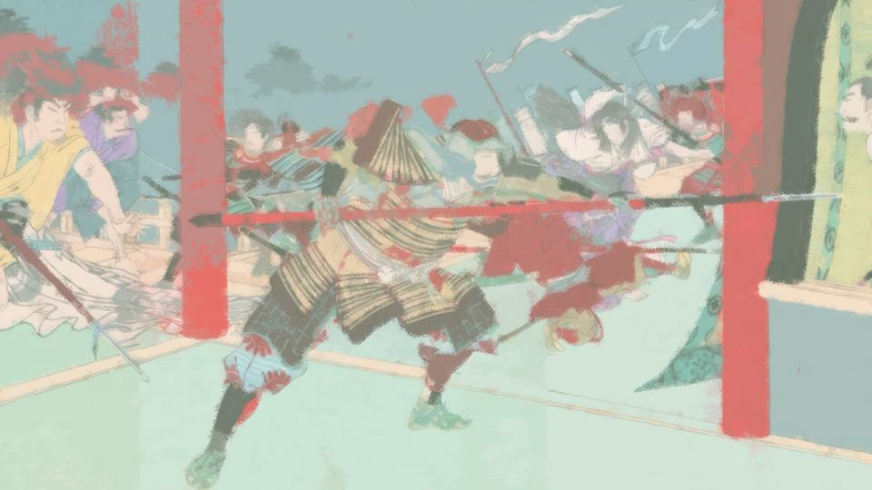
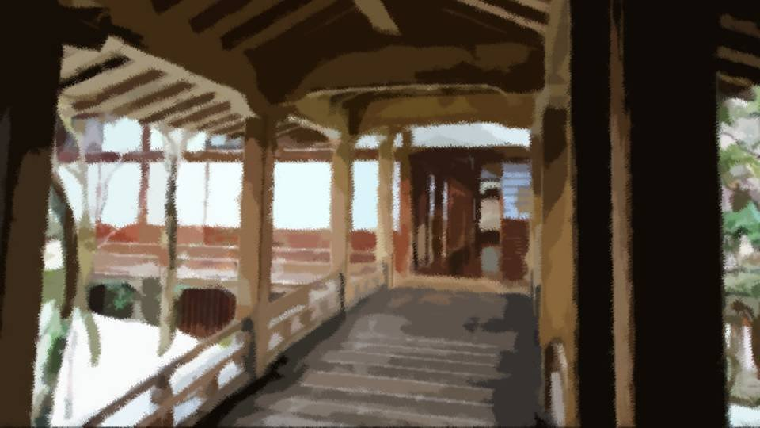
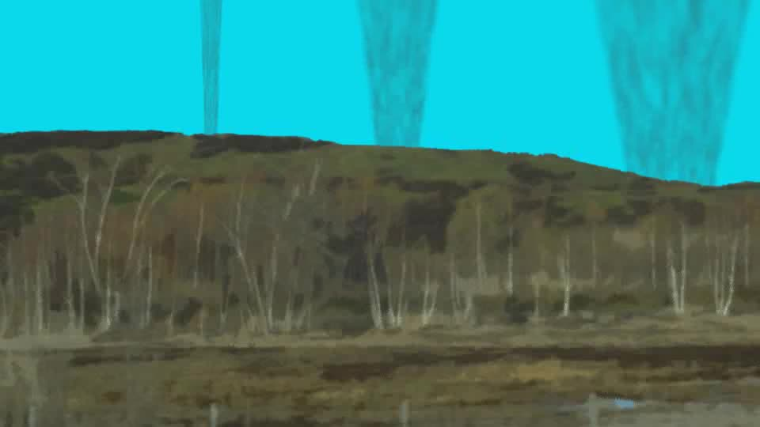
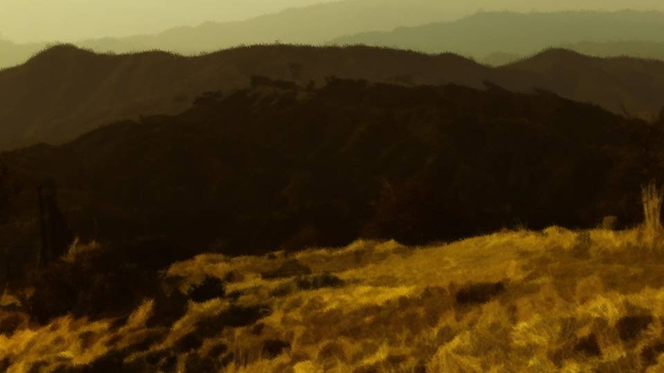
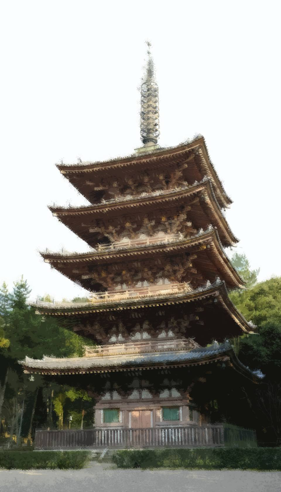
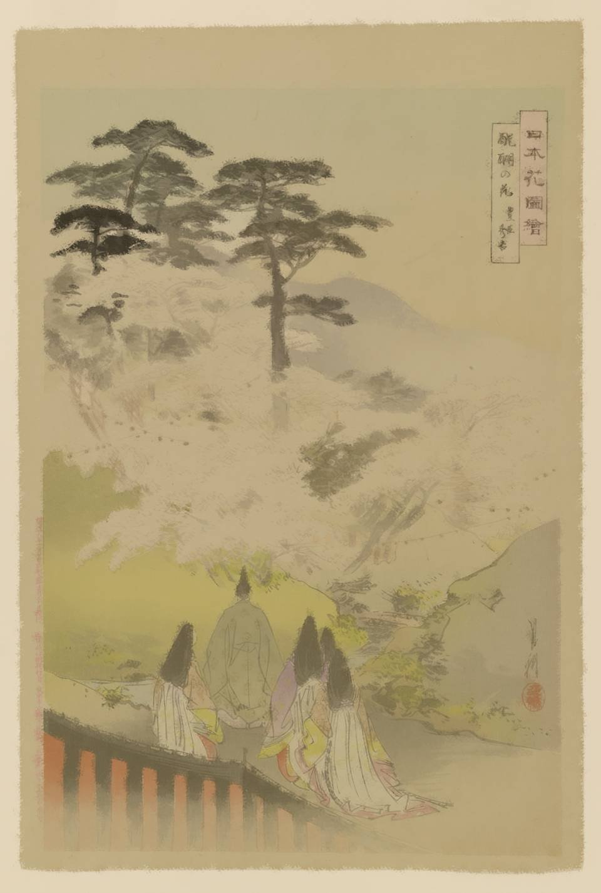
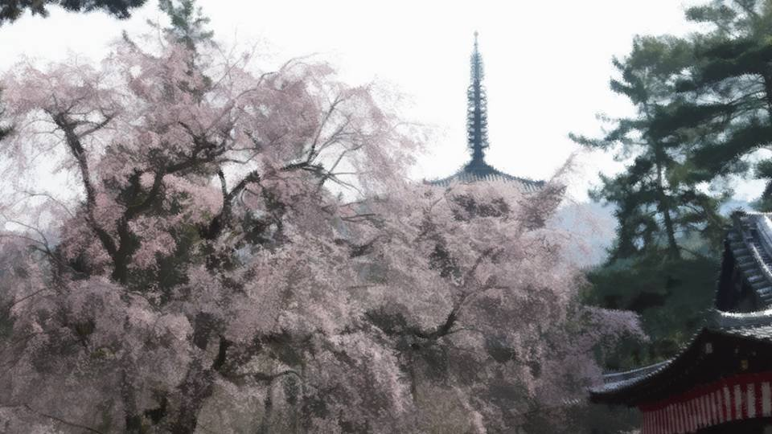
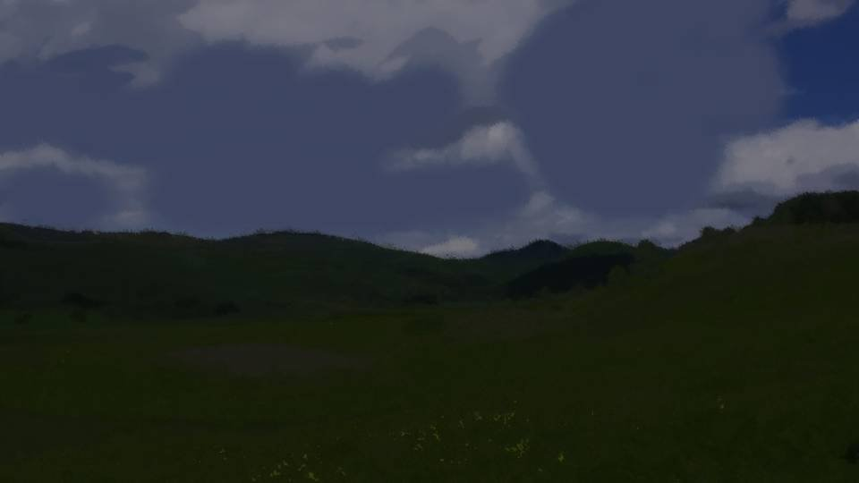

This scene is not unlocked yet in your progress
The Godai Hanami
A diary in which the chief of the council of elders recorded the Godai hanami
His Highness told me only once.
How he had taken the realm.
How he had taken the realm.

Long, long ago, His Highness wandered alone into a mountain deep in the interior, north of the Eastern Capital.
He was rescued by the people who lived there and was able to return safely, but...
It was then, His Highness said, that he received 'the curse of the cherries.'
He was rescued by the people who lived there and was able to return safely, but...
It was then, His Highness said, that he received 'the curse of the cherries.'
If the head of the Ouda house, Lord Enei Ouda, climbed to within a single step of the realm, it was because the King of Demon Warriors was at work behind the scenes―
His Highness told me as much.
As proof of it, the time when His Highness judged he would come to rule the realm―
As proof of it, the time when His Highness judged he would come to rule the realm―
Yes, that was the Riseiji Incident, which broke out in Shiyo 332.

 video: 炎.wmv
video: 炎.wmvIt seemed it had been brought about by His Highness through Akichi-dono, whom he had incited.
I see. So that was why Akichi-dono, the Ouda house's second-in-command, rose in rebellion.
I, too, had thought it strange.
Akichi-dono's rebellion: the timing, the motive, everything about it was as unnatural as could be.
I see. So that was why Akichi-dono, the Ouda house's second-in-command, rose in rebellion.
I, too, had thought it strange.
Akichi-dono's rebellion: the timing, the motive, everything about it was as unnatural as could be.
video: 炎.wmvHad he truly received 'the curse of the cherries' and become the King of Demon Warriors?
I was only half convinced of that, but long ago I fell out with His Highness and went to war against him.
In the end, partly for political reasons, that time ended in a truce and then a peace settlement, and I never beheld this so-called power of the demon warriors.
That is why I believed His Highness had not fought with his full strength.
I was only half convinced of that, but long ago I fell out with His Highness and went to war against him.
In the end, partly for political reasons, that time ended in a truce and then a peace settlement, and I never beheld this so-called power of the demon warriors.
That is why I believed His Highness had not fought with his full strength.
video: 炎.wmvNo, that is not all. Here I am, after all, in His Highness's service.
If he makes much use of a man who once opposed him, it is because His Highness had long recognized me as someone he needed.
That must be why he never tried to strike me down.
If he makes much use of a man who once opposed him, it is because His Highness had long recognized me as someone he needed.
That must be why he never tried to strike me down.
video: 炎.wmvI made up my mind at that moment:
His Highness―I will never defy him.
Even if a chance at the realm should come my way, I must wait quietly and judge the right time.
I will never be hasty, but wait quietly and judge my opportunity.
His Highness―I will never defy him.
Even if a chance at the realm should come my way, I must wait quietly and judge the right time.
I will never be hasty, but wait quietly and judge my opportunity.

Be that as it may, lately His Highness's mood had been exceedingly bad.
The bad mood had begun only a few days before.
It seemed His Highness was troubled over the question of his successor.
His Highness was still in good health, but his son, the one who mattered, was still young.
If His Highness were to pass away, what would become of his son in the succession dispute?
The bad mood had begun only a few days before.
It seemed His Highness was troubled over the question of his successor.
His Highness was still in good health, but his son, the one who mattered, was still young.
If His Highness were to pass away, what would become of his son in the succession dispute?
―!!
His Highness.
"Why, Your Highness. I trust you are in good spirits."
"............"
His Highness stopped beside me.
As I kept my head bowed, I felt his gaze pierce me, unwavering.
His mood seemed no better today.
"Why, Your Highness. I trust you are in good spirits."
"............"
His Highness stopped beside me.
As I kept my head bowed, I felt his gaze pierce me, unwavering.
His mood seemed no better today.
"Minister."
"Yes!"
"I will hold a hanami."
"............ A hanami?"
"Indeed, a hanami."
"Yes!"
"I will hold a hanami."
"............ A hanami?"
"Indeed, a hanami."
"You mean the one you have long spoken of, at Godaiji...?"
"Indeed. But..."
His Highness paused for a moment.
Was this to be no ordinary hanami after all?
"Indeed. But..."
His Highness paused for a moment.
Was this to be no ordinary hanami after all?
Some time ago, His Highness had been greatly taken with the cherry blossoms he saw at Godaiji in the Western Capital, and a hanami was to be held there on April 20.
The preparation of the tea houses, the hillside and the rest was proceeding steadily.
There were only about 20 days left until the deadline. What more could he want?
I hoped he would not make some unreasonable demand...
The preparation of the tea houses, the hillside and the rest was proceeding steadily.
There were only about 20 days left until the deadline. What more could he want?
I hoped he would not make some unreasonable demand...
"There are not enough cherry trees.
Therefore, you are to bring cherry trees here."
"Not enough cherries...? But we have already procured as many as 700 trees from the famous growing regions. I would think that is quite enough..."
"Oh? You presume to advise me?"
"N-no, nothing of the sort..."
"The cherry trees will be brought from a place I designate. Minister, you will go there yourself and bring the cherries back from that place."
"Not enough cherries...? But we have already procured as many as 700 trees from the famous growing regions. I would think that is quite enough..."
"Oh? You presume to advise me?"
"N-no, nothing of the sort..."
"The cherry trees will be brought from a place I designate. Minister, you will go there yourself and bring the cherries back from that place."
"............
How many would you require...?"
"Let me see. I do not want them exposed to too many eyes while they are moved. Five or so should do."
"Just five...?"
"Let me see. I do not want them exposed to too many eyes while they are moved. Five or so should do."
"Just five...?"
Cherry trees, brought in from a place he had designated.
What crossed my mind then was His Highness's story of 'the curse of the cherries.'
What crossed my mind then was His Highness's story of 'the curse of the cherries.'
"Those cherries would be the ones Your Highness once told me of, the..."
"Just what I expect of my Minister. It will be held on April 20, so have everything ready by then."
With that, His Highness held out a single sheet of paper to me.
No doubt it showed where those cherries were.
"Just what I expect of my Minister. It will be held on April 20, so have everything ready by then."
With that, His Highness held out a single sheet of paper to me.
No doubt it showed where those cherries were.
"Minister, you understand, do you not?
This is the most secret of secrets.
You may use laborers to carry the cherries, but once they have served their purpose, those men are―"
"Yes, I am well aware."
"Yes, I am well aware."
At that, His Highness left humming, as if his mood had suddenly mended.
There were still about 20 days until the deadline. We would just barely make it.
There were still about 20 days until the deadline. We would just barely make it.
Shiyo 340, April 5―

With about 10 men and five carts in tow, I head for a place called Arata.
We should arrive by early this afternoon.
We should arrive by early this afternoon.
These 10 fellows have no kin, and on top of that they are nothing but outcasts and swaggering rowdies who will do anything for money.
Even if they vanish, no one will raise a fuss.
Even if they vanish, no one will raise a fuss.
"Hey, hey, big important lord! So what kind of reward are we getting!?"
"Well, it's orders from the ruler of the realm, so it's gotta be money and women, all we want!"
"Bwahahaha! For me it's booze and meat!"
"Lord! You could at least tell us what we're getting, right!?"
"Well, it's orders from the ruler of the realm, so it's gotta be money and women, all we want!"
"Bwahahaha! For me it's booze and meat!"
"Lord! You could at least tell us what we're getting, right!?"
"Decide now what you want.
As far as possible, you will be given as much as you like."
"Yahoooo! He says whatever we want, as much as we want!"
"Sure enough, the ruler of the realm is something else!"
"Yahoooo! He says whatever we want, as much as we want!"
"Sure enough, the ruler of the realm is something else!"
Truly, a coarse lot.
Giving them plenty of dreams like this should make them work properly.
They are fated to be erased either way. At least I can let them dream good dreams.
Giving them plenty of dreams like this should make them work properly.
They are fated to be erased either way. At least I can let them dream good dreams.
"............?"
There has been a strange smell for a while now.
This is the smell of burning... a forest fire?
There has been a strange smell for a while now.
This is the smell of burning... a forest fire?

video: 山火事.wmvLooking closely, I see smoke rising here and there in the distance.
Forest fires cannot break out all at once, scattered like that.
No doubt about it... it's a battle!
Forest fires cannot break out all at once, scattered like that.
No doubt about it... it's a battle!
video: 山火事.wmv
"A horse, bring a horse here!"

I have the men rest where they are, and ride upwind.
What on earth is happening...?
A battle, this deep in the mountains, and now, when the realm has already been unified...
His Highness surely still has factions that do not obey him, but I can think of no reason for a battle in a place this remote.
What on earth is happening...?
A battle, this deep in the mountains, and now, when the realm has already been unified...
His Highness surely still has factions that do not obey him, but I can think of no reason for a battle in a place this remote.
―I have seen many battles in my time.
By now the sight of such harrowing scenes is no shock great enough to change my outlook on life.
Foot soldiers in thin armor scatter their guts, and those who wear thick armor have their heads struck off.
All of them have their limbs cut off, and some, not yet dead, go on waiting for death in agony.
Such things are nothing unusual to me.
By now the sight of such harrowing scenes is no shock great enough to change my outlook on life.
Foot soldiers in thin armor scatter their guts, and those who wear thick armor have their heads struck off.
All of them have their limbs cut off, and some, not yet dead, go on waiting for death in agony.
Such things are nothing unusual to me.

But the scene here goes beyond the bounds of anything one could call a battle.
If human beings did this, I cannot explain how.
If human beings did this, I cannot explain how.
video: 血ノイズ.wmv
How does one cut a man in half from head to foot?
How does one cut a man in half, armor and all?
Corpses like that lie scattered all over this place.
It's a battle, no question, but nothing like any battle I know.
How does one cut a man in half, armor and all?
Corpses like that lie scattered all over this place.
It's a battle, no question, but nothing like any battle I know.
video: 血ノイズ.wmv
Yes―this is not fighting to defeat the enemy.
It's fighting to kill the enemy, without fail.
The aim isn't to take the general's head.
The aim is to kill the enemy one second sooner.
This... this isn't a battle... it's just a massacre...!
It's fighting to kill the enemy, without fail.
The aim isn't to take the general's head.
The aim is to kill the enemy one second sooner.
This... this isn't a battle... it's just a massacre...!
video: 血ノイズ.wmv
―!?
At that moment, behind me, the clinking sound of someone walking.
At that moment, behind me, the clinking sound of someone walking.
video: 血ノイズ.wmv
"Wha...!?"
It is a warrior of a grotesque form, such as I have never seen before.
It is a warrior of a grotesque form, such as I have never seen before.
video: 血ノイズ.wmv
Both his arms and one leg have been cut off, and blood pours ceaselessly from the wounds.
Yet his face shows no anguish.
He is hobbling along on his one leg as if he felt no pain at all.
Yet his face shows no anguish.
He is hobbling along on his one leg as if he felt no pain at all.
video: 血ノイズ.wmv
"Youuu... who are you?"
The man calls out to me as if he cannot even grasp his own condition.
What is the matter with this man! He is in no position to be concerned with me...!
The man calls out to me as if he cannot even grasp his own condition.
What is the matter with this man! He is in no position to be concerned with me...!
video: 血ノイズ.wmv
Then, from another direction this time, the slapping sound of someone walking.
No... for someone walking, the sound is somehow wrong.
It could be bare feet, but even so, the sound is somehow heavy, or rather...
No... for someone walking, the sound is somehow wrong.
It could be bare feet, but even so, the sound is somehow heavy, or rather...
video: 血ノイズ.wmv
............!!?
I thought even the man missing both arms and a leg was grotesque.
But the other one who has appeared surpasses even him: truly a form neither apparition nor yokai.
I thought even the man missing both arms and a leg was grotesque.
But the other one who has appeared surpasses even him: truly a form neither apparition nor yokai.
video: 血ノイズ.wmv
"Ah, found you...
Found you...!"
That man shouts at the man missing both arms and a leg.
Where on earth does this man have that kind of strength left...!?
After all, this man...
That man shouts at the man missing both arms and a leg.
Where on earth does this man have that kind of strength left...!?
After all, this man...
video: 血ノイズ.wmv
He has no lower body.
Using his hands in place of feet, he slaps his way forward.
Using his hands in place of feet, he slaps his way forward.
video: 血ノイズ.wmv
"I'll kill you...
I'll kill you...!"
"Die! Die!"
They glare at each other, murderous intent bared on both sides―
"Die! Die!"
They glare at each other, murderous intent bared on both sides―
video: 血ノイズ.wmv
The half-man leaps eight shaku on the strength of his hands alone, and the one-legged man somersaults forward through the air like a wheel and tries to unleash a kick.
The one-legged man's leg cuts through the air like a sickle-wind as it comes down on the half-man.
The one-legged man's leg cuts through the air like a sickle-wind as it comes down on the half-man.
video: 血ノイズ.wmv
But the next instant―
video: 血ノイズ.wmv
With a loud crash, the one-legged man is slammed into the ground.
From the impact, the one-legged man's upper body has been crushed flat, as flat as a cockroach.
And the half-man
From the impact, the one-legged man's upper body has been crushed flat, as flat as a cockroach.
And the half-man
video: 血ノイズ.wmv
lands softly on both hands.
The movements are so far beyond anything human that I cannot even comprehend what is happening.
The movements are so far beyond anything human that I cannot even comprehend what is happening.
video: 血ノイズ.wmv
But with the jolt of the half-man's landing, some organ slithers out of his body.
A thing hanging from his body, attached by huge blood vessels―
A thing hanging from his body, attached by huge blood vessels―
video: 血ノイズ.wmv
It throbs, pulsing, and the severed ends of the huge vessels gape open and shut like a fish cast up on the shore.
That is unmistakably the heart.
Then the half-man turns toward me.
That is unmistakably the heart.
Then the half-man turns toward me.
video: 血ノイズ.wmv
"Hey, samurai...
Don't go laying hands on Droga...
You'll end up like me..."
"Droga?"
His face still expressionless, the half-man raises his voice to warn me.
What is Droga?
Does he mean that laying hands on Droga turns you into something like this?
"Droga?"
His face still expressionless, the half-man raises his voice to warn me.
What is Droga?
Does he mean that laying hands on Droga turns you into something like this?
video: 血ノイズ.wmv
Has the half-man finally used up his strength?
He falls flat where he is, and now he only convulses, twitching.
He falls flat where he is, and now he only convulses, twitching.
video: 血ノイズ.wmv
What is this... what is this place...!
His Highness indicated this very place, beyond doubt: the Arata settlement.
Is this Arata settlement a place where yokai live?
And I am to bring back the cherries of a place where yokai live...?
With those two grotesque figures before me I failed to notice, but cherry trees are in full bloom all around, their blossoms scattering like sprays of blood.
His Highness indicated this very place, beyond doubt: the Arata settlement.
Is this Arata settlement a place where yokai live?
And I am to bring back the cherries of a place where yokai live...?
With those two grotesque figures before me I failed to notice, but cherry trees are in full bloom all around, their blossoms scattering like sprays of blood.
video: 血ノイズ.wmv
The sight of those cherries brings me back to myself.
My mission this time is to dig up the cherries here and take them to the capital.
But what will the men think when they see this scene?
My mission this time is to dig up the cherries here and take them to the capital.
But what will the men think when they see this scene?
video: 血ノイズ.wmv
No, do not worry about that.
Once they finish carrying the cherries, they are fated to be dealt with.
Whatever they learn now, it makes no difference.
Until they are given their reward, they will not leave my side.
Once they finish carrying the cherries, they are fated to be dealt with.
Whatever they learn now, it makes no difference.
Until they are given their reward, they will not leave my side.
I summon the men, and we set to work digging up the cherries.
Two men to a tree, we dig them up, and we leave this land before the sun goes down.
I want to leave this frightening place even a moment sooner.
The men, too, are bewildered by the sight, but―
Two men to a tree, we dig them up, and we leave this land before the sun goes down.
I want to leave this frightening place even a moment sooner.
The men, too, are bewildered by the sight, but―
video: 山火事.wmv
"Heeeave-ho, the realm's cherries, let's diiig them uuup!"
"Mooney! Woomen! Boooze! Meeeat"
They hum things like that as they dig up the cherries one after another.
This is what makes ruffians easy to handle.
"Mooney! Woomen! Boooze! Meeeat"
They hum things like that as they dig up the cherries one after another.
This is what makes ruffians easy to handle.
video: 山火事.wmv
The people of Arata, having noticed us, watch our work blankly.
Every one of them is covered in blood, and none seems to have the will left to stop our work.
Or do they see no value at all in these cherries?
Or perhaps they think five cherry trees nothing but a trifling matter.
Every one of them is covered in blood, and none seems to have the will left to stop our work.
Or do they see no value at all in these cherries?
Or perhaps they think five cherry trees nothing but a trifling matter.

By the time the sun begins to touch the ridgeline, the five cherry trees are loaded onto the carts and we are ready to set out.
"All of you, well done! We now set out for the Western Capital! Once all the cherries have been delivered, I promise each of you will receive ample reward from His Highness!"
At that, a cheer goes up from the men.
"All of you, well done! We now set out for the Western Capital! Once all the cherries have been delivered, I promise each of you will receive ample reward from His Highness!"
At that, a cheer goes up from the men.

The men are in high spirits.
They have the cherries they came for, and a great reward from His Highness awaits them.
Naturally, with a reward from the ruler of the realm in store, their hopes swell.
Never knowing they will soon be disposed of.
They have the cherries they came for, and a great reward from His Highness awaits them.
Naturally, with a reward from the ruler of the realm in store, their hopes swell.
Never knowing they will soon be disposed of.
The words that half-man left behind weigh on my mind.
The word Droga, so plainly Western.
His Highness―should I ask him?
No. If it is a word that must not be known, I could even be cut down.
I have no choice but to keep pretending I know nothing.
The word Droga, so plainly Western.
His Highness―should I ask him?
No. If it is a word that must not be known, I could even be cut down.
I have no choice but to keep pretending I know nothing.
Shiyo 340, April 11―

A day ahead of the promised April 12, we arrived at Godaiji in the Western Capital.
That we arrived early was probably thanks to the men's greed to get their reward even a little sooner.
That we arrived early was probably thanks to the men's greed to get their reward even a little sooner.
"Your Highness, I have brought what you commanded."
"Hmm, well done.
Once you have disposed of those men, you may rest as well."
"Yes, I am most honored."
"Yes, I am most honored."
His Highness appeared to be in very fine spirits.
"Now then, all of you! You have served well in this task!
Over there, sake, tea and sweets have been laid out for you!
Your rewards will be prepared now, so wait there a while!"
Hearing that, the men let out a great cheer.
All of it had been laced with poison and a sleeping drug.
Hearing that, the men let out a great cheer.
All of it had been laced with poison and a sleeping drug.
It was a slow-acting poison, so they would die in their sleep without suffering.
It was the least consideration I could show them for working so hard to get this far.
It was the least consideration I could show them for working so hard to get this far.
Long ago, Lord Enei Ouda used to say:
To rule the realm, sacrifice is always necessary.
Let 10 die now, or 100,000 die in the future: which do you choose?
Be ruthless for the sake of the future, or throw the future away for what is before your eyes―
To rule the realm, sacrifice is always necessary.
Let 10 die now, or 100,000 die in the future: which do you choose?
Be ruthless for the sake of the future, or throw the future away for what is before your eyes―
―For the hanami of April 20, the planting went steadily ahead.

The 10 men who had been dealt with were all burned and used as fertilizer for the cherries.
Everyone else was told that they had caught an epidemic while transporting the cherries and died.
So everyone, eager not to spread the infection, was quick to burn the bodies.
Everyone else was told that they had caught an epidemic while transporting the cherries and died.
So everyone, eager not to spread the infection, was quick to burn the bodies.
And then, April 20―


 video: 111.wmv
video: 111.wmvAbout 1,300 guests from all over the land, down to the wives of the daimyo and the ladies-in-waiting.
They took part in this event of a lifetime.
It was a truly magnificent hanami, so grand that it overturned every notion of what a hanami could be, and lavish and splendid.
Truly an event that seemed to embody everything glamorous and showy about His Highness.
They took part in this event of a lifetime.
It was a truly magnificent hanami, so grand that it overturned every notion of what a hanami could be, and lavish and splendid.
Truly an event that seemed to embody everything glamorous and showy about His Highness.
video: 111.wmvThere were tea ceremonies and poetry gatherings, and the women who attended were ordered to change their clothes twice.
The costumes alone cost an enormous sum (3.9 billion yen in today's money).
Truly an event on which the ruler of the realm spared no extravagance.
It was more than enough to display the authority of the ruler of the realm and make everyone swear still greater loyalty.
The costumes alone cost an enormous sum (3.9 billion yen in today's money).
Truly an event on which the ruler of the realm spared no extravagance.
It was more than enough to display the authority of the ruler of the realm and make everyone swear still greater loyalty.
video: 111.wmvBut I, the Minister, know.
The true aim of this hanami― it is no more than a disguise, so that the cherries taken from Arata can be kept near His Highness.
If the cherries were simply brought in, some would find it suspicious.
That is why a pretext was needed: gathering beautiful cherries even from outside the famous growing regions, 'for the hanami.'
The true aim of this hanami― it is no more than a disguise, so that the cherries taken from Arata can be kept near His Highness.
If the cherries were simply brought in, some would find it suspicious.
That is why a pretext was needed: gathering beautiful cherries even from outside the famous growing regions, 'for the hanami.'
video: 111.wmvThat half-man of Arata told me:
'Never lay a hand on Droga.'
I have pieced together the general shape of things.
The word 'Droga' apparently means 'drug' or 'narcotic' in the West.
'Never lay a hand on Droga.'
I have pieced together the general shape of things.
The word 'Droga' apparently means 'drug' or 'narcotic' in the West.
video: 111.wmvIn other words, because the people of Arata laid hands on Droga, they started a battle like that and sank into forms one could only call yokai.
And in spite of those terrible wounds, movements one could hardly believe were human.
And in spite of those terrible wounds, movements one could hardly believe were human.
video: 111.wmvI have a faint memory of seeing it.

 video: 雨1.wmv
video: 雨1.wmvThat battle at Taruhazama, in which Ouda destroyed Magawa.
At the time I was on Magawa's side, attacking another fort, but...
Just as the outcome was about to be decided, I took a look at Taruhazama, and―
At the time I was on Magawa's side, attacking another fort, but...
Just as the outcome was about to be decided, I took a look at Taruhazama, and―
video: 雨1.wmvThere was a horde of demon warriors there.
Moving in ways no human could, they scattered the Magawa troops and overturned an overwhelming disadvantage.
I see. So at that time His Highness used a drug called Droga on his soldiers.
And that drug is made from the cherries of Arata.
Moving in ways no human could, they scattered the Magawa troops and overturned an overwhelming disadvantage.
I see. So at that time His Highness used a drug called Droga on his soldiers.
And that drug is made from the cherries of Arata.
video: 雨1.wmvHis Highness surely means to hand Droga down to his son should the succession question come to a head.
Then it would even be possible to wipe out the opposing factions by force.
That is why he keeps the Arata cherries close by.
Then it would even be possible to wipe out the opposing factions by force.
That is why he keeps the Arata cherries close by.
video: 雨1.wmvAt this moment, I understand how much of an illusion His Highness's unification of the realm has been.
I know it.
Soon, the age of the Fuji will end.
Droga exists only in that land of Arata.
Could such a thing ever be made here in the west, so far away?
This plan will surely―end in failure.
I know it.
Soon, the age of the Fuji will end.
Droga exists only in that land of Arata.
Could such a thing ever be made here in the west, so far away?
This plan will surely―end in failure.
―5 months after the hanami.
His Highness breathed his last.
He had taken to his sickbed soon after the hanami.
No, to be precise, the illness had apparently been eating at him since before the hanami.
His Highness breathed his last.
He had taken to his sickbed soon after the hanami.
No, to be precise, the illness had apparently been eating at him since before the hanami.
But his son was young, and with so short a lineage, the Fuji house would not prosper for long.
That was why absolute power was needed.
Power so strong that no one could defy it.
His Highness had tried to create Droga from the Arata cherries, but...
That was why absolute power was needed.
Power so strong that no one could defy it.
His Highness had tried to create Droga from the Arata cherries, but...
In less than a month, all five of the Arata cherries had withered.
Not one remained. All at once, every one of them.
I saw the withered trees myself, and they did not look like trees at all.
When a tree withers, only its leaves and flowers fall, and the trunk and branches remain as they were.
Not one remained. All at once, every one of them.
I saw the withered trees myself, and they did not look like trees at all.
When a tree withers, only its leaves and flowers fall, and the trunk and branches remain as they were.
But with the Arata cherries, the whole tree had shrunk in on itself.
Just like a dried-up mushroom.
On seeing that sight, His Highness fell into a frenzy, and from then on shut himself away in his bedchamber.
He must have been sure the matter of his heir would be settled, but it had turned, quite thoroughly, into an illusion.
Just like a dried-up mushroom.
On seeing that sight, His Highness fell into a frenzy, and from then on shut himself away in his bedchamber.
He must have been sure the matter of his heir would be settled, but it had turned, quite thoroughly, into an illusion.
His Highness is dead now, and I have no more use for the weakened Fuji.
From now on, we Togawa will rule the realm.
We will not rely on the likes of drugs. With firm government and a sound economy, we will bring this land to peace.
From now on, I will never have anything to do with Arata.
Demons live in that land.
And demon flowers grow thick there, exactly like cherry trees.
From now on, we Togawa will rule the realm.
We will not rely on the likes of drugs. With firm government and a sound economy, we will bring this land to peace.
From now on, I will never have anything to do with Arata.
Demons live in that land.
And demon flowers grow thick there, exactly like cherry trees.
What was it, that Arata cherry so exactly like the cherry tree?
I cannot deny that such curiosity exists in me.
But I must pass this on to later generations.
Droga― never lay a hand on it.
I cannot deny that such curiosity exists in me.
But I must pass this on to later generations.
Droga― never lay a hand on it.
Read ✓ Next: Servile Self-Love →